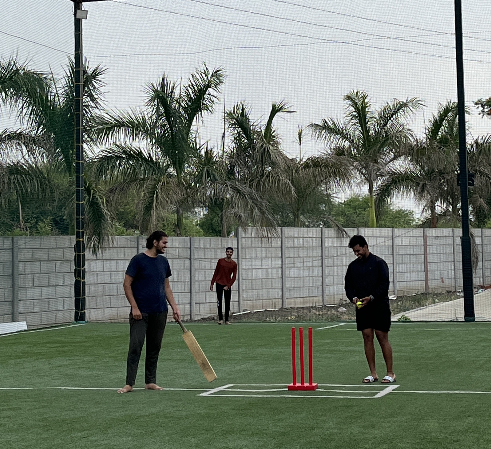

From Childhood Dreams to the Pitch: My Cricketing Journey and Mental Peace
The Nostalgic Beginning
Sports have a unique way of weaving themselves into the fabric of our lives, and for me, cricket became the unexpected thread that added both excitement and tranquility to my college journey. As someone who played cricket as a kid, and with fond memories of my dad taking me to the ground for coaching, I found not just a physical activity but a source of mental peace and personal growth.
Relearning the Strokes
As someone with a cricketing foundation, relearning the nuances of the game was both nostalgic and challenging. Batting, bowling, and understanding the rules felt like revisiting an old friend. Each missed shot and every stumble on the pitch became a lesson, reminiscent of the days when my dad imparted his wisdom. I attended casual games, practiced after classes, and slowly rekindled my connection with the game and the community surrounding it.
Conclusion
In retrospect, my decision to rekindle my love for cricket was a poignant moment in my college experience. Beyond the physical activity, it became a journey of rediscovery, community building, and a source of mental peace. Cricket, intertwined with childhood nostalgia, taught me more than a game; it became a metaphor for life—a dynamic interplay of strategy, teamwork, and personal resilience. As I continue to play through my college years, I am grateful for the unexpected return to the pitch and the timeless mental peace it continues to provide.